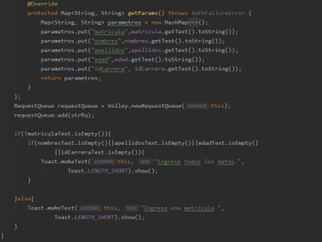
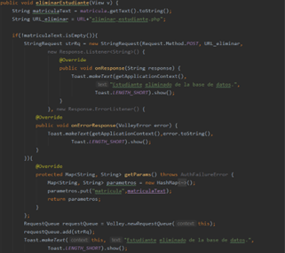

El diseño también puede ser realizado utilizando únicamente el código correspondiente:
En la empresa Adita S.A. se requiere la creación de una aplicación móvil para el registro de estudiantes, la cual
se desarrolla con Android Studio y SQLite. A continuación, se muestra paso a paso el desarrollo de la aplicación
móvil con cada una de sus funcionalidades correspondientes.
A continuación, se muestra el código de los componentes utilizados y sus respectivas configuraciones, se tomó en
cuenta cada uno de los parámetros requeridos en la tabla presentada anteriormente.
-
Es necesario crear un archivo .java para establecer la base de datos de SQLite.
-
Se deben obtener los EditText creados en el .xml para extraer la información que ingrese el usuario:
-
Se establece el método para guardar la información:
Como se puede observar, en primer lugar creamos una instancia de la clase .java de la base de datos
creada en el primer paso. Obtenemos la base de datos ya creada, obtenemos el contenido de cada uno
de los EditText y los ingresamos en la base de datos haciendo uso del método execSQL(), fijamos como
vacíos los EditText con el fin de prepararlos para un nuevo ingreso de datos y finalmente cerramos
la base de datos.
-
En el archivo .xml, agregar la siguiente línea al botón registro para activar el método creado:
-
Para consultar al estudiante por su número de matrícula:
En este caso se obtiene la base de datos de manera Readable, es decir, que pueda ser leída. Utiliza
el método rawQuery() para poder realizar la consulta a la base de datos. Se debe notar claramente
que el tipo de sentencia utilizada para realizar la consulta es similar a la utilizada en MySQL
utilizando las palabras clave select, from y where. Se recorre el Cursor para obtener los datos.
-
Para modificar los datos de un estudiante:
Para modificar los datos de un estudiante se debe obtener la base de datos de manera Writable, es
decir, en la cual se pueda escribir los datos. En este caso de utiliza el método execSQL(), tal como
en el paso 3, donde se agregaban los estudiantes a la base de datos.
-
Para eliminar a un estudiante de la base de datos:
En este caso, al igual que el paso 3 y 6, se obtiene la base de datos de manera Writable y se usa el
método execSQL().
-
Para los métodos de los pasos 5, 6 y 7, se agregan al .xml de la misma manera que el paso 4.
-
Se crean los archivos necesarios para los query en el servidor que hospeda la página web.
-
Nos aseguramos de que los permisos necesarios están establecidos en el archivo Manifest de Android
Studio.
-
Se establece el método para guardar la información:
Se utiliza un String Request para manejar la información, los EditText quedarán vacíos una vez se obtenga
una respuesta por parte del servidor web. Se envían los parámetros haciendo uso de un Map, definiendo
correctamente sus id y su contenido. Hay que tener en cuenta que el id colocado en Android Studio debe
coincidir en el colocado en el servidor web.
-
Para consultar al estudiante por su número de matrícula:
En este caso, como se desea saber la información de un estudiante, se obtiene un Json Array, del cual se
obtendrá la información en forma de un Json Object, al cual se le especificará la clave del dato que se
desea obtener.
-
Para modificar los datos de un estudiante:

Para modificar la información de un estudiante, se utiliza el mismo código del paso 3.
-
Para eliminar a un estudiante de la base de datos:

Para eliminar a un estudiante, se utiliza el código de la misma manera que en el paso anterior, esta vez,
solo enviando la matrícula del estudiante a eliminar.